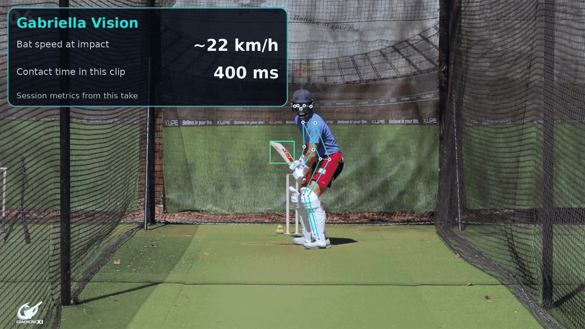

Ball
- Trajectory
- Line and length
- Speed
- Bounce point
Batting Intelligence
Objective measurement of ball, bat, body and outcome from every delivery a batter faces.
Four dimensions of every delivery

Coaching questions, not engineering metrics
See exactly where timing broke down — trigger movement, bat drop, or weight transfer — frame by frame.
Head displacement measured in centimetres across the entire batting phase, not a subjective impression.
Compare stride length, foot position, and weight transfer across 20, 50, or 100 deliveries in a single session.
Session intelligence
Every delivery builds a profile. Compare a good-contact drive against a late cut to see exactly what changed. Track batting metrics across weeks and months to measure genuine improvement.
Try the live demo with sample batting clips or request a pilot to bring objective batting intelligence to your nets.